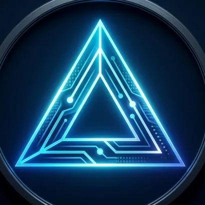
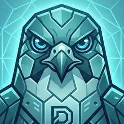
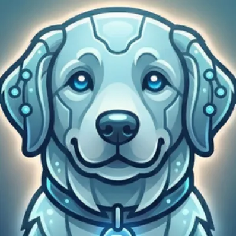

Delta Lead engineer
Bring Delta an idea or a problem. He plans the work, builds and verifies changes, and brings in specialist Epsilon agents when the job calls for a team.
From brief to working result.Your own private & encrypted cloud server for everything.
Unlimited AI agent usage, home security, media sharing, and more.
Your e-server hosts personalized AI agents, models you won't find anywhere else, fully self-tuning.
Connect your home security devices and start owning the private data that should stay private data.
Share owned media, store your photos, and invite your family.
Stay connected with a private messenger app for just you & the kids.
A team of AI agents, a workspace, and the tools to put them to work.
Meet your AI team. Delta, Darwin and Diana work in your e-server; Dexter runs on your own machine.

Bring Delta an idea or a problem. He plans the work, builds and verifies changes, and brings in specialist Epsilon agents when the job calls for a team.
From brief to working result.
When a question needs a deeper look, Darwin challenges assumptions, weighs the evidence and explores solutions. He can build and test a prototype to see what actually works.
Curious, skeptical and practical.Diana turns ideas into interfaces with a point of view. She designs and builds pages, creates imagery, and refines the details that make a product feel considered.
An artist who builds what she designs.
Run an open-source model on your machine. Choose its name and persona; capability scales with your hardware.
Voice and credit-continuation features are in development.The Agent Harness is your workspace for talking with your agents and following their work. Give Delta a goal and he can coordinate specialist Epsilon agents, consult Darwin on a difficult question, or bring Diana in for design.
Each agent brings a different perspective, and you can return to your conversations as the work moves forward.
Bring your home and office security into the same workspace as your agents. View your security dashboard and keep the information you need close at hand.
Encrypted access and owner-controlled permissions help you decide who can enter your space.
Encrypted access · Owner control
Route your home or office network through a supported device or an available public VPN endpoint. Your chosen exit supplies the outward-facing IP address and its associated location.
Available routes depend on your devices and supported endpoints.
The exit you select supplies the outward-facing IP.
Monitor events across your network and APIs, then connect the signals that matter to tasks and agents. A configured workflow can bring the details to an agent when something needs attention.
Follow the response from the original event through to the work that follows.
A service needs attention.
Attach the relevant event details.
Follow the configured workflow.
Keep the response in view.
Dexter is your local assistant, running on your device rather than in your e-server. Choose a name and persona that feel like yours, and work with an open-source model suited to your hardware.
What Dexter can do depends on the model and the machine you run it on.
Projects do not have to fit into a single conversation turn. Your agents can return to ongoing work, use project context and keep track of decisions as a job progresses.
Models have context limits. The harness manages long conversations using stored history and compaction, so an agent can continue with a summary when space is needed.
Download our launcher, explore our store, original games & exclusive mods for your favorites from other platforms.

Your portal to our world of gaming.
One download for everything we run for players: the server, the store, the map and your account, in a single window. It keeps itself and your client up to date, so there is nothing to install by hand and nothing to look up.
Get the launcher ↗
The ultimate Minecraft experience.
A custom client and a custom server, built together so they never disagree. The install is the hard part of Minecraft and it is done for you: download, press play, and you are standing in it, with mods, settings and updates arriving on their own.
Visit the server ↗
Your own cinema, for the people you invited.
Share and stream movies across the household, on the devices you already own, without uploading anything to somebody else's cloud.
Download the e-App ↓
Keep private moments private, with a private family only digital environment.
Upload and store your digital photos to your e-server and feel safe knowing you and your select invitees are the only ones who can see or access that media.
Download the e-App ↓Business & special enquiries
Partnerships, custom deployments, integration work and commercial licensing, or anything else that does not fit the public plan.
Tell us what you have in mind and we will reply to arrange a conversation.
contact@easter.companySend the email to complete your enquiry. We reply from Easter Company.
Operated by husband and wife, Owen and Hannah Easter. We build products across engineering, entertainment, education and enterprise, with a focus on productivity, management, AI and gaming.
Easter Company was founded on February 1st, 2016. Our first product was VI Mark 1 (MK I), our first AI model, and it was significantly more advanced than anything else of its time, far closer to the modern language models that would follow years later.
MK II is where the name stuck. We officially adopted “Dexter” for the AI because Owen had heard one too many jokes from family and friends about him building himself an AI girlfriend. True story.
Dexter MK IV, through 2017 and 2018, was a fully capable smart home and smart device orchestrator, able to control any Linux based system by voice command. It was free and available online, and it never saw much success for the simple reason that hardly anybody ever saw it. The people who did were never less than impressed, and Easter Company kept funding its AI research the way we still do: through general software design and development contracts.
Between 2018 and 2020 we developed the Overlord Framework, a web and native app development framework. By that point we had re-engineered every wheel there was, and this framework put all of the pieces together in a C, Python and TypeScript environment we controlled entirely. It let our Dexter AI model excel much faster, and to a far higher standard, than competing models, because the goal it was given was far simpler. Dexter was learning to use Python functions and call them inside a framework we owned end to end, and it was building entire contracted codebases, worth thousands of dollars, in minutes and for less than a penny.
GitHub Copilot, a multi-million dollar project, showed us how a worse developer would solve the problem we were about to solve. Dexter still never quite got seen online, but its abilities were put to very good use inside our own software development.
Now we are going even harder, with three brand-new and fully capable agentic models, ten times cheaper than the competition and a hundred times smarter. We are here to solve AI for everyone, and the company mission is this: “We believe we’re really good at AI, and everything we’ve seen come from the big tech world is really disappointing to us, so we’re going to step-up and sort it out now.”
We also run Easter Co. SMP ↗.
Director of Research & Development
Learned C++ at seven years old, and hasn't stopped programming since. Created Dexter MK I, II and III in 2016, arguably the most advanced AI platform of its generation. Developed VR stores for some of the biggest names in fashion and retail, contributed to MemGPT before its code was assimilated into ChatGPT, and was the founding engineer for the Federated Learning network used by European Union hospitals to share data and build shared advanced diagnosis models, funded by the Bill & Melinda Gates Foundation.
Director of Finance & Operations
Hannah runs the money and the machinery behind everything Easter Company ships. An angel investor and co-owner, she heads operations across engineering, entertainment, education and enterprise, turning ideas into products that actually leave the building. Her background in art, retail and production gives her both an eye for how something should look and a floor manager's instinct for what it costs to make. She has spent her working life on her feet, moving between studio, shop and production line, and has never seen much point in standing still. If something here ships on time, on budget and looking right, Hannah is usually the reason.